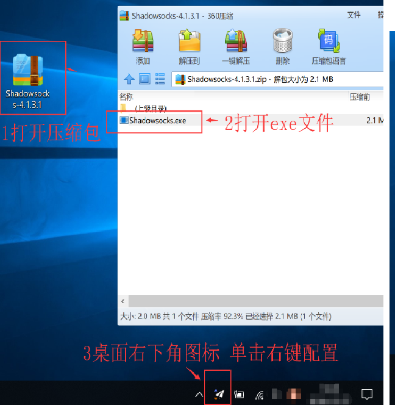
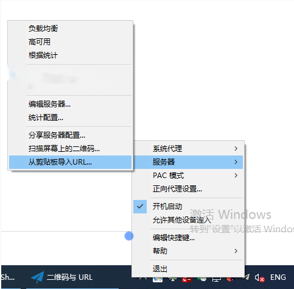
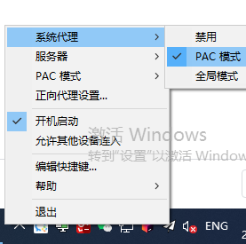

下载软件压缩包，下载后解压至任意目录安装。
| 下载：【Shadowsocks-4.1.7.1】 |
安装过程中 若提示.NET framework过低，则需要下载.NET framework软件点击下载，重新打开运行即可。
注：需要安装 .NET Framework 4.6.2 和 Microsoft Visual C++ 2015 Redistributable (x86)（一般已默认安装不需再次安装）。
1、下载后解压文件，打开EXE文件安装后，右键单击左下角任务栏的Shadowsocks【小飞机图标】进行配置。

2、在 【服务器】 菜单添加服务器节点。【服务器节点获取】详见：Shadowsocks服务器节点购买

3、选择 【启用系统代理】来启用系统代理。注：请禁用浏览器里的代理插件，或把它们设置为使用系统代理。

4、然后可以打开 www.google.com 进行测试。注：若游览器无法打开google.com等网页，可能是你的游览器有插件或者设置了代理，可以尝试更换游览器测试一下。
方法一、从剪切板导入URL【推荐】每次复制SS链接，点击从剪切板导入URL即可配置服务器
1、首先复制SS地址二维码链接
2、然后右键单击右下角的软件，点击“服务器”－“从剪切板导入URL”
3、程序自动识别SS地址并导入服务器节点信息，最后启用系统代理即可使用
方法二、扫二维码配置【推荐】 通过扫描屏幕上的二维码，自动配置，推荐
1、首先网页上或者是聊天窗口打开节点的二维码图片
2、然后右键单击右下角的软件，点击“服务器”－“扫描屏幕上的二维码”
3、程序自动识别二维码并导入服务器节点信息，最后启用系统代理即可使用
方法三、手动编辑服务器配置 添加服务器，并逐一配置相关节点信息
1、右键单击右下角的软件，点击“服务器”－“编辑服务器”
2、逐一输入节点服务器【地址（域名或者IP地址）、端口、密码】，选择加密方式后确定
3、保存服务器节点信息，最后启用系统代理即可使用
1、全局模式：你可能会遇到一些网站打不开，仍然无法访问，这个你可以试试选择【系统代理模式-全局模式】，这样使全部流量经过节点服务器。
2、PAC模式【推荐】：选择PAC模式，PAC文件网址列表走节点服务器，国内网址则走你自己使用的网络流量。
3、关于PAC更新，你可以直接从 GFWList （由第三方维护）更新 PAC 文件，或者你可以手动编辑本地pac文件。需要更新PAC：依次操作：PAC ->从GFW List更新PAC （等待更新完毕后）->使用本地PAC->启动系统代理。